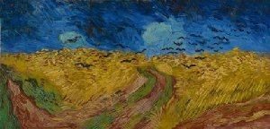
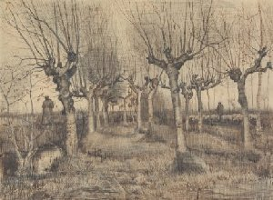
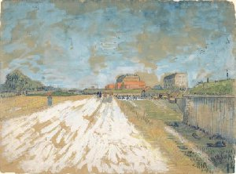
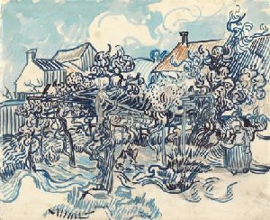

Vincent van Gogh
Vincent van Gogh (1853-1890) is wereldberoemd. Maak kennis met zijn leven en werk. Ontdek meer over zijn leven, lees zijn brieven, bekijk zijn schilderijen en tekeningen.
Schilderijen
 Zelfportretten
Zelfportretten
Vincent schilderde zelfportretten niet omdat hij ijdel was. Het was een manier om te oefenen.
 LandschappenVan Gogh hield van de natuur en schilderde graag buiten.
 Bloemen en bloesem
Bloemen en bloesem
Van Gogh schilderde een aantal indrukwekkende bloemstillevens, zoals Zonnebloemen en Irissen.
Tekeningen
 Vroege tekeningenIn zijn beginjaren als kunstenaar tekende Vincent veel om zijn vaardigheden te oefenen.
 Tekeningen uit ParijsIn Parijs deed Vincent veel nieuwe indrukken op. Hij tekende er cafes en boulevards en het landschap langs de Seine.
 Tekeningen uit Zuid-FrankrijkIn Zuid-Frankrijk maakte van Gogh veel werken op papier die laten zien dat hij naast schilder ook een zeer vaardige tekenaar was.